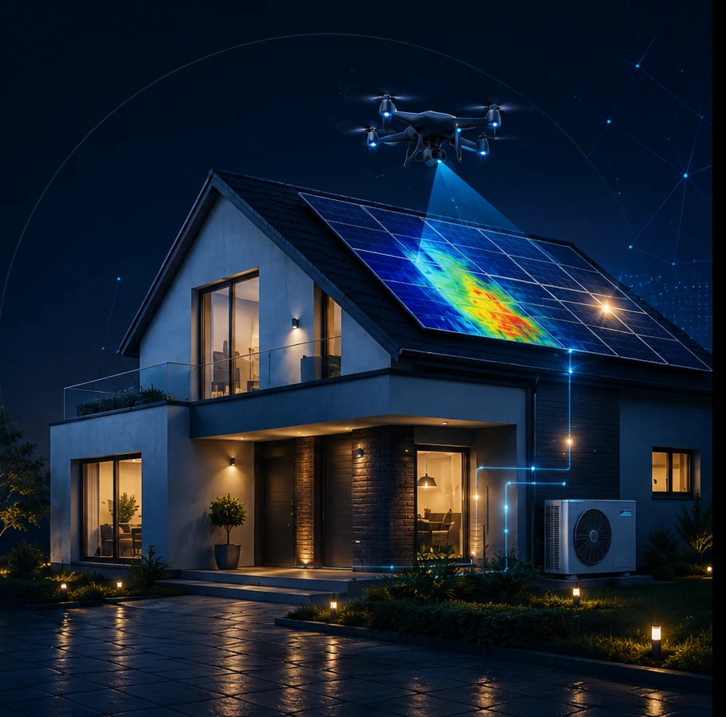

Vor-Ort-Energieberatung
Systematische Bestandsaufnahme von Gebäudehülle, Anlagentechnik, Energieverbrauch und individuellen Rahmenbedingungen.
- Gebäude- und Verbrauchsanalyse
- Fördermittelbegleitung
- Verständliche Ergebnisbesprechung
Energieberatung für Wohngebäude
Ihr unabhängiger Energieberater für Wohngebäude im Norden.
Ich begleite Eigentümerinnen und Eigentümer von der ersten Gebäudeanalyse bis zur strukturierten Modernisierungsentscheidung – technisch fundiert, wirtschaftlich nachvollziehbar und persönlich.

Leistungen
Jedes Gebäude ist anders. Deshalb entsteht die passende Sanierungsstrategie aus Gebäudedaten, Ihren Zielen, dem verfügbaren Budget und den zum Projektzeitpunkt relevanten Fördermöglichkeiten.
Systematische Bestandsaufnahme von Gebäudehülle, Anlagentechnik, Energieverbrauch und individuellen Rahmenbedingungen.
Ein abgestimmter Fahrplan zeigt, welche Maßnahmen sinnvoll aufeinander aufbauen und wie sich Ihr Gebäude schrittweise entwickeln kann.
Erstellung von Energieausweisen für den Verkauf von Wohngebäuden. Energieverbräuche überwachen. Energiemanagement für Ihr Zuhause.
Förderbedingungen und technische Anforderungen können sich ändern. Entscheidend sind immer die zum Zeitpunkt Ihres Vorhabens gültigen Regeln.
Ablauf Energieberatung
Ein klarer Prozess schafft Sicherheit. Umfang und Tiefe werden passend zu Ihrem Gebäude und Ihrer aktuellen Entscheidungssituation festgelegt.
Ziele, Gebäude, Zeitrahmen und aktuelle Fragestellung kurz einordnen.
Unterlagen sichten, Vor-Ort-Termin durchführen und relevante Daten erfassen.
Schwachstellen, Maßnahmenpakete, Abhängigkeiten und Alternativen bewerten.
Empfohlene Reihenfolge erläutern und passende Förderwege einordnen.
Bei Bedarf Angebote, Nachweise und technische Fragen im Projekt unterstützen.
Innovation
Das Projekt Skywalker Energie hat einen technologiegestützten Ansatz für die flächendeckende thermografische Erfassung und KI-assistierte Auswertung von Quartieren entwickelt.
Wärmebilddaten werden mit offen verfügbaren Geodaten und Gebäudekontext zusammengeführt. So entsteht eine verständliche Datengrundlage für Wärmekataster, vertiefende Prüfungen und die Priorisierung weiterer Schritte.
Wärmeplanung, Quartiersanalysen und Priorisierung energetischer Maßnahmen.
Transparente Entscheidungsgrundlagen für Investitionen und Förderprogramme.
Energieeffizienz bewerten und Schäden erkennen.
Sanierungsstrategien für große Gebäudebestände auf Basis objektiver Wärmedaten.
Projektbezogene Umsetzung: Umfang und Terminierung richten sich nach Quartier, Genehmigungslage, Witterung, Datenschutz und verfügbarer Datengrundlage.
Mit Mausrad, Pfeiltasten oder Wischgeste wechseln Sie seitenweise.
Vollständiges PDF öffnenAblauf der Quartiersanalyse
Die thermografische Quartiersanalyse wird transparent vorbereitet, unter passenden Rahmenbedingungen durchgeführt und gemeinsam ausgewertet.
Fluggebiet prüfen und erforderliche Genehmigungen beziehungsweise Abstimmungen mit der zuständigen Luftfahrtbehörde vorbereiten.
Geeignete Witterung, Temperaturdifferenz und Uhrzeit abstimmen und den Einsatz verbindlich terminieren.
Anwohner frühzeitig über Zweck, Zeitraum, Datenschutz und Ansprechpartner der Befliegung informieren.
Thermische Aufnahmen nach dem abgestimmten Flugplan strukturiert und nachvollziehbar erfassen.
Aufbereitete Wärmebilder und Quartiersauswertung übergeben, Ergebnisse gemeinsam einordnen und nächste Schritte erläutern.
Förderung & Ökosystem
Ihr Ansprechpartner
Über mich
Als Wirtschaftsingenieur mit Fortbildung zum Gebäudeenergieberater (HWK) verbinde ich technische Gebäudeanalyse mit wirtschaftlicher Entscheidungsunterstützung.
Mein Anspruch ist, aus komplexen Anforderungen eine klare und realistische Vorgehensweise zu entwickeln. Dabei stehen die Situation Ihres Gebäudes, Ihre Ziele und eine nachvollziehbare Umsetzung im Mittelpunkt.
„Eine gute Sanierungsentscheidung beginnt nicht mit einem Produkt, sondern mit einem belastbaren Verständnis des Gebäudes.“Unverbindlich kennenlernen
Kontakt
Beschreiben Sie kurz Ihr Gebäude und Ihre aktuelle Fragestellung. Im Erstkontakt klären wir, welche Beratungsleistung sinnvoll ist und welche Unterlagen bereits hilfreich sind.